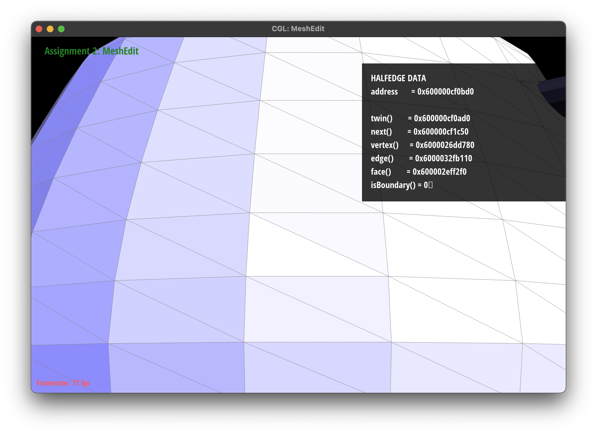

CS184/284A Spring 2025 Homework 2 Write-Up
Link to webpage: (TODO) cs184.eecs.berkeley.edu/sp25
Link to GitHub repository: https://github.com/cal-cs184-student/sp25-hw2-cuppuccino

Overview
In this assignment, I have played with Bezier curves and surfaces, triangle meshes, and half-edge data structure. Bezier curves are really simple and intuitive, while half-edge is really furstrating.Section I: Bezier Curves and Surfaces
Part 1: Bezier curves with 1D de Casteljau subdivision
Basis of De Casteljau's algorithm
De Casteljau's algorithm is a geometric recursive method used to calculate points on a Bezier curve given a set of control points. The basic idea is:
- Given a set of control points, divide the curve into two parts and find the point on the curve at parameter t.
- Repeat the process for each part until the curve is a single point.
My implementation of De Casteljau's algorithm in single step
- Initialize
std::vector <Vector2D> result - Reserve the same size of points for
result(optimized for vector). - Process each point with t
- Return
result
Results
|
|
|
|
|
|
|
|
|
|
|
Part 2: Bezier surfaces with separable 1D de Casteljau
Basis of De Casteljau's algorithm extending to 3D surfaces
While a Bezier curve is defined by a 1D array of control points, a Bezier surface is defined by a 2D grid of control points P[i,j]. This creates a tensor product surface parameterized by two values (u,v), where each parameter ranges from 0 to 1.
- The algorithm is similar to the 1D case, but now we need to handle two parameters instead of one. We first use Bezier curves in the u direction, and then get a new control point for v direction bezier curce at each u position on the curves.
- Then we do the normal 1D de Casteljau algorithm on the v direction with the control points get from the previous step.
- With v on this final curve, the result is a point on the surface.
By this way, we can get any point on the surface by the parameter (u,v).
My implementation of De Casteljau's algorithm in single step
The implementation is similar to the 1D case, we use three functions to implement
BezierCurve::evaluate(double u, double v) is the main function to do the get the control points for 1D de Casteljau algorithm.
BezierSurface::evaluate1D(std::vector is the main function to do the 1D de Casteljau algorithm, it will do every single step of the algorithm untill we get the final point.
BezierSurface::evaluateStep(std::vector is the function to finish one step of the algorithm, very similar to the fucntion in part I.
Results
|
|
Section II: Triangle Meshes and Half-Edge Data Structure
Part 3: Area-weighted vertex normals
Introductionof area-weighted vertex normals
Area-weighted vertex normals are a technique for calculating smooth vertex normals on a 3D mesh. Unlike simple averaging of face normals, this method weights each adjacent face's contribution by its area, resulting in more accurate and visually pleasing surface shading. (Phong Shading)
My implementation
- Initialize variables.
- Traverse each face arround the vertex by updating the corresponding neighbor half-edge with
h->twin()->next(). - Calculate the area of the face using cross product of two vectors.
- Sum the normals of all the adjacent faces to get the normal of the vertex.
Results
|
|
|
Part 4: Edge flip
In this part, I implemented the edge flip function. The tricky part for this misshion, and the following ones, is that the complex dependency of the pointer-focused data structures is messy to update. Thus analisis of the dependencies is the key to implement the functions and avoid bugs.
The methodology I used to implement in this part is still stick to the conventional way of dealing with linked list, use temporary pointers (iterators) to record current position and lossable positions in the update process. And use different states to better distinguish dependencies and gradually update the whole mesh.
Analysis of the data structure

|
The diagram above shows the relationship between different data structures. It is obvious that all the actual geometric elements are only dependent on the correspondinghalf edges, while half edges do not care the content of the geometric elements
Moreover, the shape of the mesh is mainly defined by the next() pointer and twin pointer() of the half edges. Thus, I decided to update the faces, vertexies and edges first, and then update the pointing relationshipes in between the half edges.
The update process of the half edges would be determined in three states, to avoid losse ends and ensure correctness. The diagrams below shows the three states of the update process.
|
|
In the diragram, each box represents a half edge, and the arrows represent the pointer. Red color means that it need to change Next and Vertex. Orange ones should change Next and Face, while yellow ones only change Next.
My implementation
- Check boundary. (only skip)
- Update faces and vertexes.
- State transition.
Results
|
|
|
Part 5: Edge split
In boundary case, I didn't use the complex method to implement the edge split. Instead, I use the most normal array to restore all the address. This is benificial because the index contains self-explain positional information.
To be specific, for each same category elements, the index of arrays is started from the e0 -> haldedge direction, going counter clockwise centered at the new vertex.
algorithm Phases
- data preparation, initialize all the array pointers.
- Update new vertex.
- Update edges.
- Update faces.
- Traverese each face in index to update half edges. Inside each face, start the update with outer half-edge
Results
|

|
|
|
|
|
Part 6: Loop subdivision for mesh upsampling
In this part, what I do is basically following the steps recommended in the instruction. So the steps are all the same and I would not waste time explaining those.
However, there are things woth mentioning.
The vertexes and edges are somehow undifined in the isNew property, so after each flip and split it is crucial to always update the isNew property.
In the split operations in step 3, Where I have to traverse all the old edges. I implemented it with a new vector storing all the old edge address in the beginning. There is a fun way to do it. It is pre-store the old edge end and use it. Because theoretically all the edges is stored in linked list and would be append in the end. But I didn't success doing so.
Results
|
|
|
|
In the cube loop subdivision, It is becoming more and more smooth and loose information on edges.